The purpose of this tutorial is to show how to use oomph-lib's Lagrange Enforced Flow Navier-Stokes preconditioner. Similarly to the problem considered in the Steady finite-Reynolds-number flow through an iliac bifurcation tutorial, the outflow boundary of the demo problem (discussed below) are not aligned with any coordinate planes. Parallel outflow is therefore enforced by a Lagrange multiplier method, implemented using oomph-lib's FaceElement framework.
The model problem, theory and preconditioner
We will demonstrate the development and application of the preconditioner using the Poiseuille flow through a unit square domain 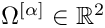 rotated by an arbitrary angle  (see the figure below). The domain 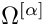 is obtained by rotating the discrete points
(see the figure below). The domain 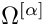 is obtained by rotating the discrete points  in the unit square 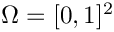 by the following transformation
in the unit square 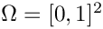 by the following transformation
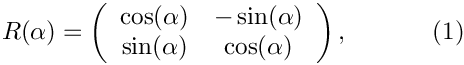
where is the angle of rotation. The figure below show the flow field (velocity vectors and pressure contours) for a unit square domain rotated by an angle of 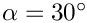 and a Reynolds number of  . The flow is driven by a prescribed parabolic boundary condition.
. The flow is driven by a prescribed parabolic boundary condition.
For convenience, we present the boundary conditions for the non-rotated unit square 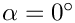. In order to obtain the boundary conditions for 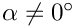, we only have to apply the rotation (1). The flow is driven by imposing a parabolic velocity profile along the inflow boundary 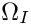. Along the characteristic boundary, 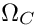, the no-slip condition 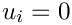,  , is prescribed. We impose ‘parallel outflow’ along the outlet 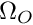 by insisting that
, is prescribed. We impose ‘parallel outflow’ along the outlet 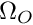 by insisting that
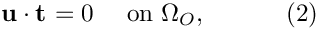
where 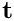 is the tangent vector at each discrete point on the boundary 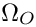. We weakly enforce the flow constraint by augmenting the Navier-Stokes momentum residual equation (introduced in the Unsteady flow in a 2D channel, driven by an applied traction tutorial) with a Lagrange multiplier term so that it becomes
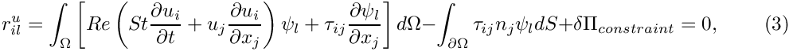
where
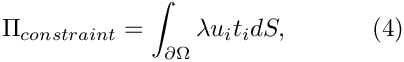
and  is the Lagrange multiplier. Upon taking the first variation of the constraint with respect to the unknown velocity and the Lagrange multiplier, the residual form of the constrained momentum equation is
is the Lagrange multiplier. Upon taking the first variation of the constraint with respect to the unknown velocity and the Lagrange multiplier, the residual form of the constrained momentum equation is
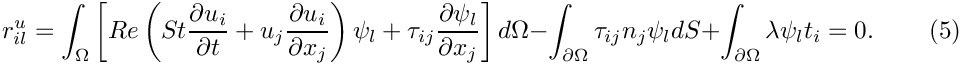
The weak formulation of (2) is simply
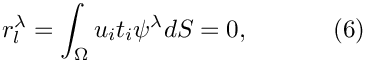
where 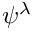 is a suitable basis function. Equation (5) reveals that the Lagrange multipliers act as the (negative) tangential traction 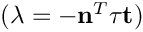 that enforce the parallel flow across the boundary 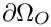. We discretise this constraint by attaching ImposeParallelOutflowElements to the boundaries of the "bulk" Navier-Stokes elements that are adjacent to 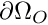 as shown in the Steady finite-Reynolds-number flow through an iliac bifurcation tutorial, also see the Deformation of a solid by a prescribed boundary motion tutorial which employs a similar technique used to enforce prescribed boundary displacements in solid mechanics problems. We discretise the Navier-Stokes equations using oomph-lib's QTaylorHoodElements, see the 2D Driven Cavity Problem tutorial for more information.
The discretised problem therefore contains the following types of discrete unknowns:
- The fluid degrees of freedom (velocity and pressure).
- The nodal values representing the components of the (vector-valued) Lagrange multipliers. These only exist for the nodes on
 . (The nodes are re-sized to accommodate the additional unknowns when the
. (The nodes are re-sized to accommodate the additional unknowns when the ImposeParallelOutflowElementsare attached to the bulk elements.)
The preconditioner requires a further sub-division of these degrees of freedom into the following categories:
- the unconstrained velocity in the x-direction
- the unconstrained velocity in the y-direction
- [the unconstrained velocity in the z-direction (only in 3D)]
- the constrained velocity in the x-direction
- the constrained velocity in the y-direction
- [the constrained velocity in the z-direction (only in 3D)]
- the Lagrange multiplier at the constrained nodes
- [the other Lagrange multiplier at the constrained nodes (only in 3D)].
For a 2D problem, the linear system to be solved in the course of the Newton iteration can then be (formally) re-ordered into the following block structure:
![\[ \left[ \begin{array}{ccccc|c} { F_{\rm xx}}&{ F_{\rm x\bar{\rm x}}}&{ F_{\rm xy}}&{ F_{\rm x\bar{\rm y}}}&{ B_{\rm x}^{T}}&\\ { F_{\bar{\rm x}\rm x}}&{ F_{\bar{\rm x}\bar{\rm x}}}&{ F_{\bar{\rm x}\rm y}}&{ F_{\bar{\rm x}\bar{\rm y}}}&{ B_{\bar{\rm x}}^{T}}&{ M_{\rm x}}\\ { F_{\rm yx}}&{ F_{\rm y\bar{\rm x}}}&{ F_{\rm yy}}&{ F_{\rm y\bar{\rm y}}}&{ B_{\rm y}^{T}}&\\ { F_{\bar{\rm y}\rm x}}&{ F_{\bar{\rm y}\bar{\rm x}}}&{ F_{\bar{\rm y}\rm y}}&{ F_{\bar{\rm y}\bar{\rm y}}}&{ B_{\bar{\rm y}}^{T}}&{ M_{\rm y}}\\ { B_{\rm x}}&{ B_{\bar{\rm x}}}&{ B_{\rm y}}&{ B_{\bar{\rm y}}}&\\ \hline &{ M_{\rm x}}&&{ M_{\rm y}}&& \end{array} \right] \left[ \begin{array}{c} \Delta \mathbf{U}_{\rm x}\\ \Delta \mathbf{\overline{U}}_{\rm x}\\ \Delta \mathbf{U}_{\rm y}\\ \Delta \mathbf{\overline{U}}_{\rm y}\\ \Delta \mathbf{P}\\ \Delta \mathbf{\Lambda} \end{array} \right] = - \left[ \begin{array}{c} \mathbf{r}_{\rm x}\\ \mathbf{r}_{\bar{\rm x}}\\ \mathbf{r}_{\rm y}\\ \mathbf{r}_{\bar{\rm y}}\\ \mathbf{r}_{\rm p}\\ \mathbf{r}_{\rm \Lambda} \end{array} \right]. \ \ \ \ \ \ (7) \]](form_28.png)
Here the vectors  , 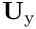,
, 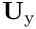,  and 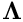 contain the
and 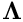 contain the  and
and  components of the velocity unknowns, the pressure unknowns and Lagrange multipliers unknowns, respectively. The overbars identify the unknown nodal positions that are constrained by the Lagrange multiplier. The matrices 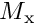 and 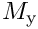 are mass-like matrices whose entries are formed from products of the basis functions multiplied by a component of the tangent vector at each discrete point on , for example, 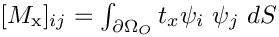. Denote
components of the velocity unknowns, the pressure unknowns and Lagrange multipliers unknowns, respectively. The overbars identify the unknown nodal positions that are constrained by the Lagrange multiplier. The matrices 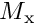 and 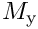 are mass-like matrices whose entries are formed from products of the basis functions multiplied by a component of the tangent vector at each discrete point on , for example, 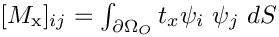. Denote
![\[ J_{\rm NS} = \left[ \begin{array}{ccccc} { F_{\rm xx}}&{ F_{\rm x\bar{\rm x}}}&{ F_{\rm xy}}&{ F_{\rm x\bar{\rm y}}}&{ B_{\rm x}^{T}}\\ { F_{\bar{\rm x}\rm x}}&{ F_{\bar{\rm x}\bar{\rm x}}}&{ F_{\bar{\rm x}\rm y}}&{ F_{\bar{\rm x}\bar{\rm y}}}&{ B_{\bar{\rm x}}^{T}}\\ { F_{\rm yx}}&{ F_{\rm y\bar{\rm x}}}&{ F_{\rm yy}}&{ F_{\rm y\bar{\rm y}}}&{ B_{\rm y}^{T}}\\ { F_{\bar{\rm y}\rm x}}&{ F_{\bar{\rm y}\bar{\rm x}}}&{ F_{\bar{\rm y}\rm y}}&{ F_{\bar{\rm y}\bar{\rm y}}}&{ B_{\bar{\rm y}}^{T}}\\ { B_{\rm x}}&{ B_{\bar{\rm x}}}&{ B_{\rm y}}&{ B_{\bar{\rm y}}} \end{array} \right], \ \ \ L = \left[ \begin{array}{ccccc} &{M_{\rm x}}& &{ M_{\rm x}} & \end{array} \right], \ \ \ \Delta \mathbf{X}_{\rm NS} = \left[ \begin{array}{c} \Delta \mathbf{U}_{\rm x}\\ \Delta \mathbf{\overline{U}}_{\rm x}\\ \Delta \mathbf{U}_{\rm y}\\ \Delta \mathbf{\overline{U}}_{\rm y}\\ \Delta \mathbf{P} \end{array} \right],\mbox{\ \ \ \ and } \ \ \ \mathbf{r}_{\rm NS} = \left[ \begin{array}{c} \mathbf{r}_{\rm x}\\ \mathbf{r}_{\bar{\rm x}}\\ \mathbf{r}_{\rm y}\\ \mathbf{r}_{\bar{\rm y}}\\ \mathbf{r}_{\rm p} \end{array} \right]. \]](form_38.png)
Then we can re-write (7) as
![\[ \left[ \begin{array}{cc} { J_{\rm NS}}&L^{T}\\ L& \end{array} \right] \left[ \begin{array}{c} \Delta \mathbf{X}_{\rm NS}\\ \Delta \mathbf{\Lambda} \end{array} \right] = - \left[ \begin{array}{c} \mathbf{r}_{\rm NS}\\ \mathbf{r}_{\rm \Lambda} \end{array} \right]. \ \ \ \ \ \ (8) \]](form_39.png)
We have shown that
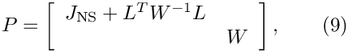
where 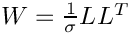 is an optimal preconditioner for the linear system (8) if we set 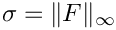 where 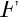 is the compound  top-left block
top-left block
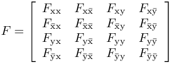
in the Jacobian matrix. Application of the preconditioner  requires the repeated solution of linear systems involving the diagonal blocks 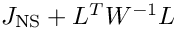 and
requires the repeated solution of linear systems involving the diagonal blocks 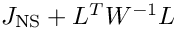 and  . The matrix 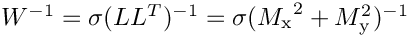 is dense and will cause the addition of dense sub-matrices to the Jacobian matrix:
. The matrix 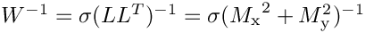 is dense and will cause the addition of dense sub-matrices to the Jacobian matrix:
![\[ \sigma L^{T}(LL^{T})^{-1}L = \sigma \left[ \begin{array}{ccccc} \cal O &\cal O &\cal O &\cal O &\cal O \\ \cal O&{M_{\rm x}}({M_{\rm x}}^{2}+{M_{\rm y}^{2}})^{-1}{M_{\rm x}}&\cal O &{M_{\rm x}}({M_{\rm x}}^{2}+{M_{\rm y}^{2}})^{-1}{M_{\rm y}}&\cal O \\ \cal O&\cal O &\cal O &\cal O &\cal O \\ \cal O&{M_{\rm y}}({M_{\rm x}}^{2}+{M_{\rm y}^{2}})^{-1}{M_{\rm x}}&\cal O &{M_{\rm y}}({M_{\rm x}}^{2}+{M_{\rm y}^{2}})^{-1}{M_{\rm y}}& \cal O\\ \cal O&\cal O &\cal O &\cal O &\cal O \end{array} \right]. \]](form_50.png)
Numerical experiments show that an efficient implementation can be obtained by replacing by its diagonal approximation 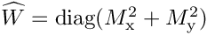. Then the inversion of is straight forward and the addition of  to the Jacobian does not significantly increase the number of non-zero entries in the matrix 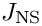. Denote the efficient implementation by
to the Jacobian does not significantly increase the number of non-zero entries in the matrix 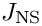. Denote the efficient implementation by
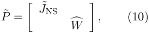
where 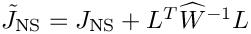 is the augmented Navier-Stokes Jacobian matrix. In our implementation of the preconditioner, the linear system involving 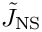 can either be solved "exactly", using SuperLU (in its incarnation as an exact preconditioner; this is the default) or by any other Preconditioner (interpreted as an "inexact solver") specified via the access function
Numerical experiments show that a nearly optimal preconditioner is obtained by replacing the solution of the linear system involving the augmented Navier-Stokes Jacobian 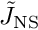 by an application of Elman, Silvester and Wathen's Least-Squares Commutator (LSC) preconditioner, and by replacing the remaining block-solves within these preconditioners by a small number of AMG cycles.
With these approximations, the computational cost of one application of 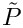 is linear in the number of unknowns. The optimality of the preconditioner can therefore be assessed by demonstrating that the number of GMRES iterations remains constant under mesh refinement.
Demo driver and use of the preconditioner
To demonstrate how to use the preconditioner, here are the relevant extracts from the driver code two_d_tilted_square.cc which solves the model problem described above. As explained in the Linear Solvers Tutorial switching to an iterative linear solver is typically performed in the Problem constructor and involves a few straightforward steps:
- Create an instance of the IterativeLinearSolver and pass it to the Problem
In our problem, we choose right preconditionedGMRESas the linear solver:
// Create oomph-lib iterative linear solver.IterativeLinearSolver* solver_pt = new GMRES<CRDoubleMatrix>;// We use RHS preconditioning. Note that by default,// left hand preconditioning is used.static_cast<GMRES<CRDoubleMatrix>*>(solver_pt)->set_preconditioner_RHS();// Store the solver pointer.Solver_pt = solver_pt;
- Create an instance of the Preconditioner and give it access to the meshes
TheLagrangeEnforceFlowPreconditionertakes a pointer of meshes. It is important that the bulk mesh is in position0:By default,// Create the preconditionerLagrangeEnforcedFlowPreconditioner* lgr_prec_pt= new LagrangeEnforcedFlowPreconditioner;// Create the vector of mesh pointers!Vector<Mesh*> mesh_pt;mesh_pt.resize(2,0);mesh_pt[0] = Bulk_mesh_pt;mesh_pt[1] = Surface_mesh_P_pt;lgr_prec_pt->set_meshes(mesh_pt);SuperLUPreconditioneris used for all subsidiary block solves. To use the LSC preconditioner to approximately solve the sub-block system involving the momentum block, we invoke the following:The LSC preconditioner is discussed in another tutorial.// Create the NS LSC preconditioner.lsc_prec_pt = new NavierStokesSchurComplementPreconditioner(this);lsc_prec_pt->set_navier_stokes_mesh(Bulk_mesh_pt);lsc_prec_pt->use_lsc();lgr_prec_pt->set_navier_stokes_preconditioner(lsc_prec_pt);
- Pass the preconditioner to the solver, and the solver to the problem
// Pass the preconditioner to the solver.Solver_pt->preconditioner_pt() = lgr_prec_pt;// Pass the solver to the problem.this->linear_solver_pt() = Solver_pt;
Source files for this tutorial
- The source files for this tutorial are located in the directory:
demo_drivers/navier_stokes/lagrange_enforced_flow_preconditioner
- The driver code is:
demo_drivers/navier_stokes/lagrange_enforced_flow_preconditioner/two_d_tilted_square.cc
PDF file
A pdf version of this document is available.